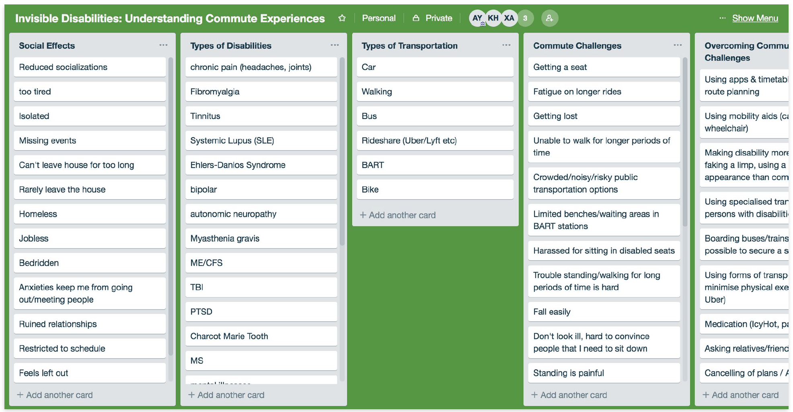
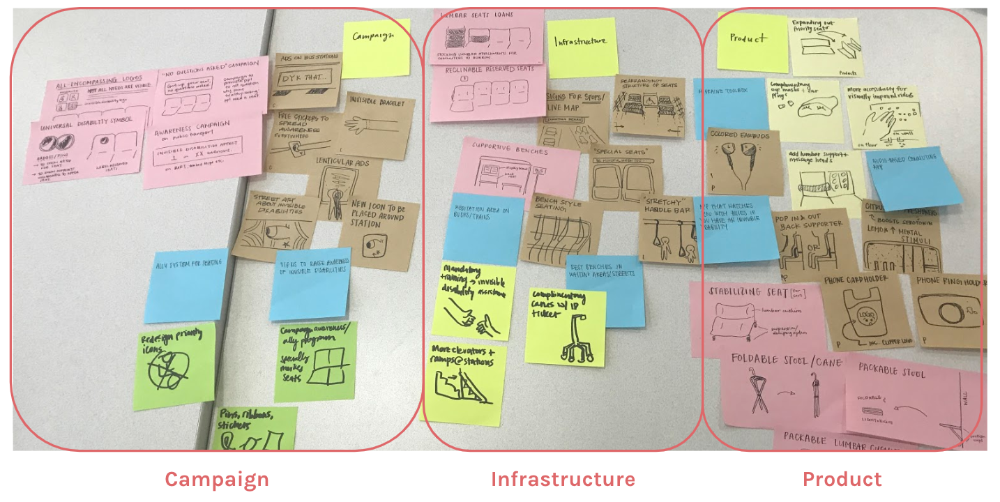

Reimagining Mobility — DES INV 190-2 x Ford, Fall 2018
In Fall 2018, I worked with Faith Ang, Kathleen Hsu, and Jasmine Tran on a project for DES INV 190-1: REIMAGINING MOBILITY, a design course offered through the Jacobs Hall of Design Innovation.
The class began with a pretty open-ended prompt: how might we reimagine mobility? As a joint effort between Jacobs Hall and Ford Motors, the goal of the class was to encourage innovative solutions in the transportation space and launch a campaign proposal at the end of the semester. We were mentored by great instructors and got critiqued each week.
The intent of this project was not to "solve invisibility disability problems" in any capacity — this would be inappropriate to approach from a design perspective because the nature of problems faced by those with invisible disabilities is incredibly complex. Rather, this project reflects our team's design concepts specific to public transit spaces based on the stories we learned about. Our goal is to continue sharing these stories and educating communities about designing with accessibility in mind.
As a team, we were all interested in the intersection of transportation and accessibility.
Getting Started
For this project, we conducted user research, synthesized insights, ideated on concepts, and produced mock campaign marketing and graphic designs for public transportation experience recommendations.
We started by thinking of accessibility issues in current public transit spaces, and discovered there was a huge lack of solutions for people with invisible disabilities. Through this class, we wanted to pursue the opportunity to learn more about and raise awareness of the commuting experience for individuals with invisible disabilities.Individuals with invisible disabilities are often misunderstood, especially in public transit spaces.
A majority of commuters make assumptions about disabilities that have no physical markers.
Current Experience
Invisible disabilities refer to disabilities that aren’t immediately apparent, and can range from physical ailments like chronic pain and vision problems, to psychiatric conditions like brain injury and PTSD. Individuals with invisible disabilities can look ‘normal’ and healthy on the outside, causing their needs to be often overlooked, especially on public transportation.
Universal public transportation iconography is outdated, and only communicates physical disabilities, despite the fact that roughly 32.6 million people live with conditions that aren't immediately or physically apparent. (BART specific public signage)
Secondary Research
We did secondary research to understand how much of the population was affected by invisible disabilities, as well as the public transportation policies that catered to their needs. Unfortunately, aside from a few independent campaigns, public transit spaces are seldom accomodating to non-physical disabilities.
Since we knew so little about invisible disabilities in the first place, we dedicated most of our research efforts to listen to people talk about how having a invisible disability plays in their life, and more specifically, how they interact with others on public transportation.
We reached out in any way we could to different communities to learn more about commuting experiences for people with invisible disabilities.
Research Approach
To set our research goals, we drafted some of our main research objectives and designed a preliminary survey to send out to different communities. Our intention with the survey was to understand the spectrum of invisible disabilities that exist and their corresponding needs, as well as how individuals with invisible disabilities experienced public transportation.
We reached out to DSP centers on campus, invisible disability groups on Facebook, and friends within our personal networks — however, the community we got the most responses from was Reddit! HUGE shout out to the amazing folks on those subreddits who were incredibly open to sharing their stories and helping us learn so much.
Interviews
In addition to the amazing quality and quantity of responses we had to our survey, several individuals were interested in follow-up interviews. This helped us have a more natural and candid conversation about how having an invisible disability affects everyday life, with a focus on mobility and transportation accessibility.This was one of the most eye-opening and gratifying parts of the project because we realized how much we didn't know about invisible disabilities; moreover, many individuals echoed the sentiment that lack of awareness negatively impacts their everyday life, especially around getting a seat on public transportation.

"It can feel like a violation of privacy to explain what you’re going through and trying to justify yourself to people all the time."
—C, a college graduate who lives with Ehlers-Danlos Syndrome, Lupus, Postural Tachycardia and PTSD.
"There’s no information about how to not discriminate against those with disabilities."
—D, a student who lives with fibromyalgia (chronic nerve pain disorder).
"There's a culture of ignorance on public transportation, I've definitely observed people not get up even for someone who is visibly disabled and appears to need a seat."
—E, a law school grad who lives with chronic migraines, chronic pain, and a genetic connective tissue disorder.
We organized what we learned and synthesized needs of people with invisible disabilities across a visual, physical and mental condition spectrum.

Insight Synthesis
A screenshot of our Trello board, where we drag and dropped all of our survey responses in order to affinity map and dive deeper into synthesis.
There were over 50 unique conditions from our survey alone, none of which are depicted in priority seating diagrams. People wish they were represented more in disability iconography or signage because of misinformed etiquette they face from other commuters.
Social lives of individuals with invisible disabilities are heavily affected, and many end up staying home because transportation is troublesome and anxiety inducing. In some cases, it can lead to homelessness and loss of jobs.
Spectrum Categorization
A screenshot of how we sorted representation of different conditions among our responses. We related them to the population of the US affected by those conditions to put our insights to scale.
There exist common misconceptions about invisible disabilities because people assume disabilities are only physical, young people are seldom disabled, etc. Many individuals look able-bodied and face judgement due to a lack of awareness of their condition, and wish it wasn’t taboo to talk about in public. They also experience passive aggression or misunderstanding when sitting in priority seats.
We ideated for each respective type of impairment and sorted our solutions into three main categories: campaign, infrastructure and product.

Insight Synthesis
Campaign solutions contained trends around marketing and public awareness in public transportation spaces. These ideas were based on the frustration people experienced about lack of awareness on public transportation, especially for those with invisible disabilities, their needs aren't always communicated through current signage and publicity efforts.
Infrastructure solutions revolved around partnerships with public transit agencies, like BART or MUNI (for the bay area folks), for bigger scale changes to policies or the physical aspects of transportation (interior, seating or station design concepts).
Product solutions explored handheld ideas that could be distributed to commuters for personal use. These were based on specific requests from our survey that addressed physical and emotional comfort.
We wanted to design an inclusive experience and shift the weight of the problem onto fellow commuters, instead of burdening individuals with invisible disabilities with self-disclosure.
Reprioritization
Feasibility was ranked on would have the greatest impact based on our key findings and what was most realistic considering the constraints of BART/AC Transit, large organizations where change is slow.
The feasible and validated opportunities to explore were an awareness campaign, ally system and logo redesign. In our low fidelity sketching, we decided to tackle the logo redesign because a pressing issue with the current public transportation signage is how it only represents the disabled with stick figures that are pregnant, use canes, or sit in wheelchairs.
Our goal was to communicate a helping hand to foster the allyship that able-bodied folks can have with individuals who identify as having an invisible disability. We also explored using the eye icon to make it clear that not all ailments have recognizable physical markers.
Concept Iteration
In addition to redesigning iconography for public transportation, we also thought about the ways we could communicate a campaign message to promote the allyship. We did this by exploring different poster designs, and how they could incorporate with public transit spaces.
We eventually finalized the logo to include text description with a circular shape so it could integrate easily as a logo on stickers or buttons to have within public transit spaces or on personal devices.
Through an invisible disability campaign, we hope to create a new culture on public transit with an ally system.
Etiquette
Through this invisible disability campaign, we hope to create a new culture on public transit with an ally system. From our research, we saw invisible disability awareness campaigns that had badges worn by those with invisible disabilities.
Iconography
Our future vision is to see a change in infrastructure across public transportation methods. We plan to partner with public transportation services, such as AC Transit, BARt, and Muni to place invisible disability posters in train stations, bus stops, as well as in the interiors of trains and buses.
Distribution
With our campaign, we wanted to reduce the stigma and instead have allies wear invisible disability pins or use stickers on products. This way, those with invisible disabilities can get a seat by communicating with allies using a silent gesture, such as a simple nod or glance.
Final Reflections
It's crucial to keep people's needs at the center design ideation, but it's also important to refine the problem scope enough because not every single type of ailment can be addressed in a public-facing solution.
Talking to users and getting their input is absolutely crucial at every step of the process. Naming, copy and graphic design for this project were largely led by the feedback we received, and we could have done with getting more people to give critique.
It's ok to pivot towards a better solution (even when there's only a few weeks left :~0), and continue to get feedback on updated iterations.